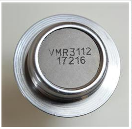

Garantia Viemar
70 mil Km ou 2 anos
Regulamento
A Viemar oferece ao mercado de reposição uma garantia de até 70 mil Km ou 2 anos para articulações axiais, terminais de direção, pivôs de suspensão e pinças de freios. Para ter direito à Garantia 70 mil Km ou 2 anos, o consumidor é obrigado a preencher o Termo de Garantia Contratual, disponível no website da Viemar http://www.viemar.com.br/garantia70mil/cadastro.html, obedecendo ao prazo de até 30 (trinta) dias após a emissão da Nota Fiscal e/ou do Cupom Fiscal. Em desrespeitando esse prazo, o consumidor perde o direito à Garantia de 70 mil Km ou 2 anos, mantendo-se apenas a Garantia Legal. É somente ao se cadastrar no site que o cliente recebe o direito de requerer a análise da peça depois de passados os 90 dias da garantia prevista em Lei (artigo 26 do Código de Defesa do Consumidor – Lei nº 8.078/1990).
Confira tudo o que você precisa saber:
A garantia 70 mil Km ou 2 anos vale para todos os produtos fabricados pela Viemar?
Não. É válida para articulações axiais, terminais de direção, pivôs de suspensão e pinças de freios.
Qual é o prazo que eu tenho para me inscrever para ter direito à garantia 70 mil Km ou 2 anos?
O consumidor tem o prazo de até 30 dias a partir da emissão da nota ou do cupom fiscal para se cadastrar no site e ter o direito a solicitar a garantia.
O que é preciso fazer para se cadastrar no site?
Basta acessar o endereço http://www.viemar.com.br/garantia70mil/cadastro.html, criar uma conta de usuário, cadastrar pelo menos um veículo e, por fim, cadastrar as suas peças para ativar a garantia.
Que documentos precisa?
Você precisa ter em mãos a nota ou cupom fiscal, seus dados de identificação, do veículo e os dados da peça (referência/código do produto e lote).
A garantia 70 mil Km ou 2 anos vale para os produtos fabricados a partir de quando?
A garantia 70 mil Km ou 2 anos vale para articulações axiais, terminais de direção, pivôs de suspensão e pinças de freios fabricados a partir de janeiro de 2015.
Como eu sei que a peça foi fabricada a partir de janeiro de 2015? E como eu identifico a referência/código e o lote?
As peças Viemar são identificadas por lote de fabricação e os dois últimos números do lote referem-se ao ano da fabricação. Então, se os dois últimos números forem 15, 16, 17, 18 e assim por diante, significa que estão cobertas pela garantia 70 mil Km ou dois anos. Essas identificações estão presentes tanto na embalagem como na peça. Veja exemplos:
Exemplo de lote na etiqueta da embalagem

Exemplo de lote no produto
Como eu sei que o meu cadastro deu certo?
Ao se cadastrar, você cria login e senha e o sistema envia um e-mail de confirmação para o endereço eletrônico informado.
Posso cadastrar mais de uma peça por vez? E mais de um veículo?
Sim. No seu login (perfil), você pode cadastrar quantas peças e veículos forem precisos.
E se eu não me cadastrar no site, mas mesmo assim tiver a Nota Fiscal do produto, posso solicitar a garantia 70 mil Km ou 2 anos depois de passado o prazo legal de 90 dias?
Não. A garantia 70 mil Km ou 2 anos é só para quem fez o registro no site. Ela é um diferencial da Viemar para quem se cadastrar, e que vai além do cumprimento da legislação.
Como eu faço para requerer a garantia 70 mil Km ou 2 anos?
A solicitação de garantia 70 mil Km ou 2 anos obedece aos mesmos padrões da garantia legal. Basta entrar em contato com a Viemar, através do Serviço de Atendimento ao Cliente (SAC) ou encaminhar junto ao seu distribuidor, que fará o contato com a Viemar.
Mesmo já tendo cadastrado a nota ou cupom fiscal, eu preciso apresentá-la para requerer a garantia?
Sim. A nota ou cupom fiscal é o comprovante que garante a análise da peça, com o Termo de Garantia.
Onde encontro o Termo de Garantia?
O Termo de Garantia acompanha a peça Viemar. Nele, você encontra um campo específico para registrar a reclamação – DESCRIÇÃO DA RECLAMAÇÃO. É com base nessa informação que a peça será analisada. Esse Termo de Garantia deve acompanhar a peça para análise na fábrica.
Por que as outras linhas de produtos Viemar não têm garantia 70 mil Km ou 2 anos?
A VIEMAR é a primeira empresa brasileira a fornecer 70 mil Km ou 2 anos nos componentes de suspensão, direção e freios. E por ser pioneira, iniciou com as linhas de Articulações Axiais, Terminais de Direção e Pivôs de Suspensão, que formam o COMBO VIEMAR, consagrado pelo mercado.
Perda de Garantia
Fique atento! Se houver qualquer um desses problemas, a garantia será recusada:
- Forem constatados danos no produto por acidente;
- Ocorrer a aplicação/instalação inadequada da peça, bem como a montagem ou a desmontagem inadequadas;
- For verificada a má conservação de outros componentes do veículo que interfiram no correto funcionamento da peça em garantia;
- Ocorrer a adulteração/falsificação do produto;
- houver a alteração das características originais recomendadas pelo fabricante para os componentes de suspensão, direção e freios do veículo (incluindo rodas e pneus);
- Ocorrer a não observância das recomendações especificadas pelo fabricante do veículo relacionadas aos componentes de suspensão, direção e freios;
- O veículo for submetido a abuso, sobrecarga ou acidente;
- O veículo for utilizado em competições de qualquer espécie ou ocorrer o uso fora das condições normais de trafegabilidade.